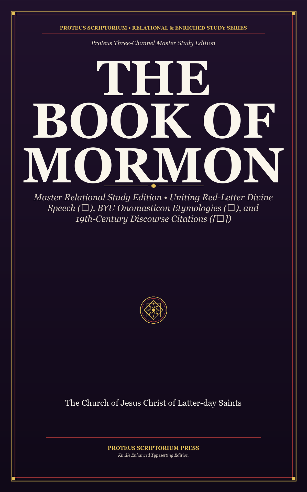

Flagship Study EditionThe Book of Mormon: Master Study Edition
Red-Letter Divine Speech, BYU Onomasticon Etymologies & 19th-Century Discourse Citations
The flagship relational study volume combining red-letter speech of Christ (✦), linguistic name etymologies (◈), and early Restoration sermon citations ([★]).